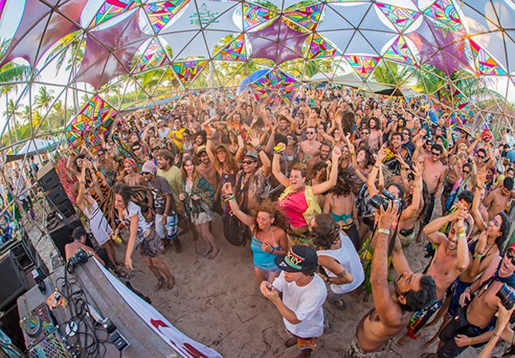

The Pantheon Psy
Todo comenzó en 2018 cuando algunos amigos decidieron explorar haciendo un viaje espontáneo a Goa y descubriendo el entonces mucho movimiento clandestino Psychedelic Goa Trance que estaba ocurriendo en Goa y sus efectos llenos de asombro que se extendían por todo el mundo.
Después de este viaje entre este grupo, pocos regresaron con un fenómeno que les cambió la vida y comenzaron a organizar pequeñas reuniones privadas dentro de la ciudad y las afueras restringidas solo a unos pocos asociados cercanos y sus conocidos. Estas aventuras mágicas sembraron vagamente las semillas y la visión en la persona que deseaba llevar esta Experiencia a otros a mayor escala.
Solo después de frecuentes viajes de exploración de este tipo a fiestas y festivales en toda la India y en todo el mundo, se produjo una fuerte manifestación y realización para un individuo que deseaba difundir esta experiencia a otros a una escala mucho más profesional con una visión muy clara de promover este género incomprendido. de la música trance psicodélica y hacer que las personas se den cuenta de que esta música y su cultura dance tienen que ver con la unidad, empujando nuestros límites y explorando lo inexplorado con el impacto permanente del amor que tiene en todos los que lo experimentan. Somos The Pantheon Psy
